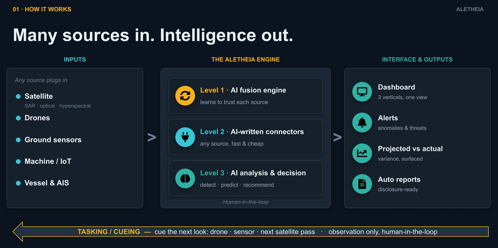
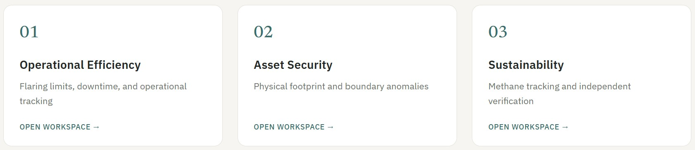
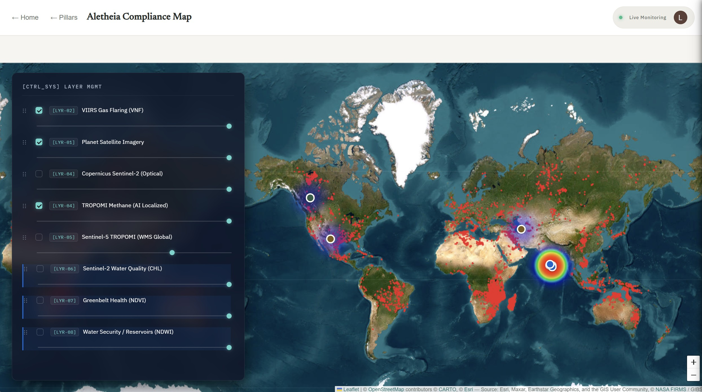
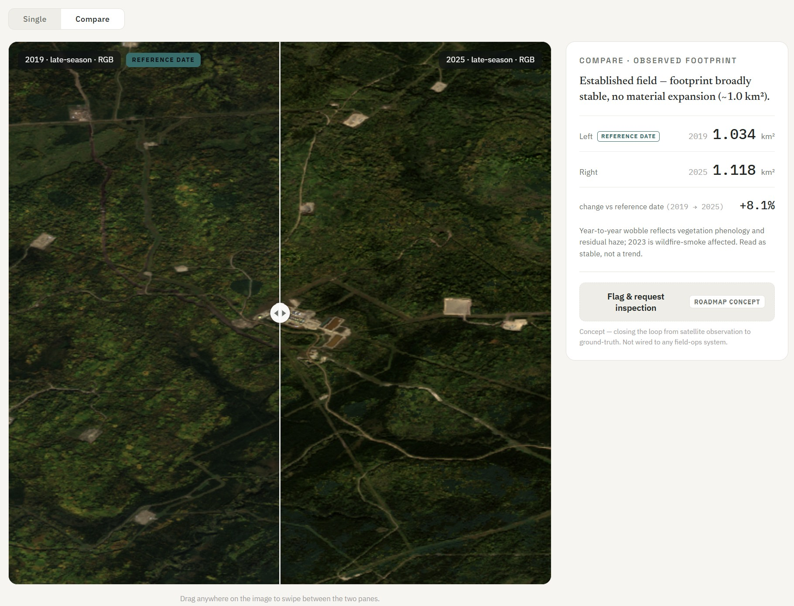

01Why this project
Two trends have converged over the 2020–2026 period. On the regulatory side, the Global Methane Pledge (COP26, 2021), the EU Corporate Sustainability Reporting Directive (in force 2024), the US SEC climate-disclosure rule (2024), the EU Methane Regulation, and the Science Based Targets initiative have collectively raised heavy-industry environmental disclosure expectations to unprecedented granularity. On the observation side, satellite instruments for the same signals have matured to operational quality: TROPOMI for atmospheric methane (2017), EMIT for hyperspectral plume detection (2022), MethaneSAT for facility-scale methane (2024), and a Sentinel-1 SAR record now exceeding ten years of C-band operations.
The two trends together create a structural gap: operators must disclose at facility-year granularity, but independent verification capability using satellite-derived evidence has only recently become possible at scale. Aletheia is built to close that gap — as a trusted layer between what heavy industry reports and what satellites, sensors and drones actually observe.
Oil and gas is the right first vertical for three converging reasons. It produces uniquely rich multi-sensor signatures (combustion via flaring, atmospheric methane, refinery NO2, marine slicks). It faces the most acute regulatory clock — methane is the second-largest contributor to anthropogenic warming, and oil and gas is its largest controllable source. And it publishes the most detailed facility-level disclosures of any heavy industry, giving us a well-populated "reported" side of the comparison.
02What Aletheia does — three verticals, one engine
Aletheia is structured as a single fusion engine feeding three verticals that share architecture but present different dashboards, alerts, projected-vs-actual variance views, and disclosure-ready reports.

Asset Security covers intrusion and encroachment detection, pipeline right-of-way monitoring, and infrastructure integrity. Operations Efficiency covers flaring tracking, combustion-efficiency inference, and idle-asset monitoring. Sustainability covers methane self-audit, emissions for regulatory disclosure, and auditable evidence packs that survive regulator or investor challenge.

03The scientific methodology — from physical signal to compliance verdict
The methodology I built for the sustainability vertical — also the reasoning backbone that supplies the other two — is a three-layer stack: reported-baseline ingestion, multi-sensor observation ingestion, and discrepancy computation with propagated uncertainty and confidence categorisation.
Reported-baseline layer
Company sustainability reports (PDF parsing), regulatory filings, Climate TRACE bulk data, and World Bank GGFR annual flaring statistics are ingested into a per-facility annual record: facility ID, operator, coordinates, asset type (upstream, refinery, FLNG, etc.), reported flaring volume in BCM/year, reported methane intensity or absolute emissions in tonnes/year, reported throughput or production, declared operational status, and OGMP 2.0 reporting level if disclosed. This becomes the "reported" side of every discrepancy calculation.
Observation layer — six sensor streams, physics-anchored processing
Each stream has its own processing chain, calibrated to its underlying physics rather than to a generic detector:
- TROPOMI methane (Sentinel-5P, product S5P_L2__CH4____). Daily ingestion of Level-2 XCH4, quality-filtered on qa_value ≥ 0.5, with surface-albedo (NIR albedo < 0.05 discarded) and cloud (fraction < 0.3) filters. Rolling regional background (10–30 day median outside plumes), enhancement field ΔXCH4 = observed − background. Plume detection follows the CNN methodology of Schuit et al. (2023) and Maasakkers et al. Quantification via the Integrated Mass Enhancement method (Frankenberg et al. 2016; Varon et al. 2018): Q = U × IME / L, using ERA5 10 m wind at the plume location. Cross-Sectional Flux is the alternative for transit-style plumes. Annualisation includes detection-probability correction for cloudy-day loss.
- VIIRS Nightfire (flaring). Daily ingestion of VNF detection points, filtered on source temperature between 1200 K and 2500 K to isolate flares (typical 1500–1800 K) from biomass fires (~800 K) and lower-temperature industrial combustion. Spatial attribution via 250–500 m buffer around facility centroids from the reported-baseline layer. Volume estimation via the Elvidge correlation calibrated against GGFR regional coefficients. Uncertainty typically ±20–30% per facility-year from the peer-reviewed Nightfire validation literature.
- TROPOMI NO2 (independent activity indicator). Facility-scale enhancement over a 10 km-radius background, quality-filtered on qa_value > 0.75. Aggregated to weekly or monthly composites to reduce single-scene noise. Sustained NO2 above baseline at facilities reporting reduced activity is flagged.
- TROPOMI CO (secondary activity cross-check). The CO/NO2 ratio distinguishes combustion regimes — lean (high-temperature, typical refinery) versus rich (incomplete, upset condition).
- Sentinel-1 SAR C-band VV (oil slicks). Thermal-noise removal → radiometric calibration to σ⁰ → Refined-Lee speckle filter → Range-Doppler terrain correction → land mask. Wind-gated detection: ERA5-derived wind must be in the 2–12 m/s band (below, false positives from natural glassy patches; above, slicks disperse). Adaptive σ⁰ threshold for the MVP; CNN segmentation (trained on the Krestenitis et al. 2019 dataset) is the target for higher-fidelity detection.
- ERA5 reanalysis (ancillary). 10 m wind for methane plume quantification and SAR wind-gating.
Discrepancy layer — from observation to verdict
For each facility × indicator × year, the discrepancy is Di = (observedi − reportedi) / reportedi × 100%, with a propagated uncertainty σi combining sensor measurement uncertainty, attribution uncertainty in multi-source areas, temporal sampling effects, and reported-side disclosure granularity. Confidence categorisation is three-tier: high (|D| > 3σ), medium (σ < |D| < 3σ), low (|D| < σ). Per-facility aggregate is a weighted summary across indicators, with weights tuned to asset type — flaring weight high for upstream gas facilities, NO2 weight high for refineries.
Cross-indicator interpretation
The flare × methane interpretation matrix reads directly from the physics: a lit flare with low methane means the site is operational and combusting efficiently; a lit flare with high methane means operational but combusting poorly; no flare and high methane means venting, leak, or unlit flare; no flare and no methane means the site appears genuinely inactive. NO2 and CO cross-reconcile: NO2 elevated with CO elevated confirms broad activity; NO2 elevated with CO normal indicates lean high-temperature combustion typical of a well-tuned refinery; NO2 normal with CO elevated flags incomplete combustion or upset. A SAR slick without an operator incident report is a candidate undisclosed release. All atmospheric indicators normal at a facility reporting high activity flags candidate over-reporting.
04The agentic reasoning layer
The user-facing interface is not a dashboard filter. It is a large-language-model agent (Google Gemini API) that sits between natural-language operator queries and the discrepancy records. The agent is system-prompt-anchored as a compliance verification analyst — familiar with oil-and-gas operations, OGMP 2.0 reporting levels, the GGFR methodology and its uncertainty regime, and the specific limitations of each satellite instrument in the observation layer. It is explicitly instructed to surface measurement uncertainty in every response and never to assert a discrepancy without supporting evidence.
The agent exposes four function-call tools onto the underlying data:
lookup_facility(name)— returns AOI bounding box, operator, and most-recent reported metrics.fetch_indicator(facility, indicator, year)— returns observed values with uncertainty and supporting scene metadata.compute_discrepancy(facility, indicator, year)— returns the gap analysis with confidence categorisation.get_evidence(facility, indicator, date_range)— returns supporting scene IDs, plume polygons, or detection points to back the verdict.
A typical query flow — "is the reported activity at [facility] consistent with satellite observation in 2024?" — parses to a facility and year, calls lookup_facility, then compute_discrepancy for the relevant indicators (flaring and methane for an upstream site), then get_evidence for any flagged discrepancy, and composes a structured response with verdict, evidence summary, confidence category, and explicit caveats: cloud-cover reduction of TROPOMI coverage, VIIRS blindness to daytime-only flaring, wind-window exclusion of SAR scenes, and the propagated uncertainty in the final number.
The full reasoning trace — parsed query, tool calls, retrieved data, intermediate inferences — is logged for analyst inspection. This is not a nicety. In compliance contexts, the verdict may be challenged by the operator, the regulator, or a third-party auditor; the challenge is only defensible if the reasoning is reconstructible.
05The live prototype
A live prototype is deployed and operational on a Firebase-hosted URL (link at the top of this page). It runs a Leaflet basemap over a Sentinel-2 cloud-free composite, ingests the reported-baseline and observation-layer feeds described above, executes the discrepancy computation, and surfaces flagged facilities through the dashboard.
The first working demonstration — used at the workshop submission — runs Sentinel-2 time-series change detection over a real North American upstream site at 38 m/pixel scale, computing annual disturbed footprint from 2019 through 2025. The footprint ranged from 0.89 km2 at its 2021 minimum to 1.30 km2 at its 2023 maximum, a signal that now feeds the change-detection module of the Asset Security vertical and cross-references against the reported operational-status field of the baseline layer. The specific operator, coordinates, and site name are not published here because the operator has not been formally notified of public reference; the methodology and the result shape are what matter.


06What I contributed
Aletheia started as a two-week ISU Advanced Studies workshop in June 2026. It has since become a founding-stage company: French SAS in incorporation, three co-founders on equal terms, a live prototype platform, a first design partner in initial engagement, and non-dilutive funding under active pursuit through government programmes and space agencies alongside a Paris incubator placement.
Within the three-way founding split, I own the scientific methodology and the agent reasoning layer end-to-end. Specifically: the compliance-gap thesis and the choice of oil and gas as first vertical; the multi-sensor observation architecture — which streams, at what quality thresholds, with what physics-anchored processing chains; the flare × methane interpretation matrix and the wider cross-indicator reconciliation logic; the discrepancy computation framework with propagated uncertainty and three-tier confidence categorisation; and the full design of the LLM agentic layer — system-prompt anchoring, tool-interface specification, structured response format, and audit-logging requirements for verdicts that must survive a compliance challenge.
David Guevara Razo owns the software architecture and API-level data acquisition, including a multispectral deepfake-detection Vision Transformer that gates chip authenticity before any input reaches the agentic layer. Vinay Lakshman owns finance, strategy, and business development, including the design-partner engagement and the non-dilutive funding pursuit.
07Where we are today
- Co-founding team of three established (May 2026), on equal terms, with roles mapped to build (David), delivery (Ludivine), and commercial (Vinay).
- French SAS in incorporation.
- Live prototype platform deployed and operational.
- First design partner in initial engagement — a major Indian chemical manufacturer whose chain will host the first live proof.
- Non-dilutive funding pursuit across French and European government programmes, national and international space agencies, and a Paris incubator placement.
- Pre-seed conversations opening, sequenced after the non-dilutive stack and the design-partner proof.
08Why this is on a space-engineering portfolio
Aletheia sits at the intersection of three things: space-based sensing read at the physics level, agentic reasoning designed at the architecture level, and heavy-industry compliance chosen as a first vertical for defensible commercial reasons. The methodology is deliberately industry-agnostic: mining (open-pit expansion, tailings, dust, water draw), steel and cement (thermal signatures, dust, plant expansion), shipping (port activity, vessel emissions, sanctions-circumvention detection via SAR-plus-AIS reconciliation), and aviation (airport activity) all have satellite-observable signatures, compliance pressure, and public disclosures. Each new vertical is a detection module plugged into the same gap-detection and agentic layers.
The same instincts scale to any operator, agency, or downstream user who needs to reconcile what was reported against what was observed.